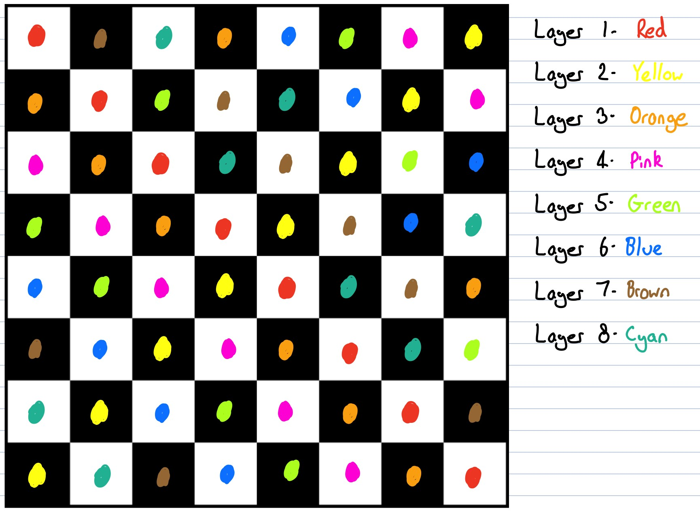
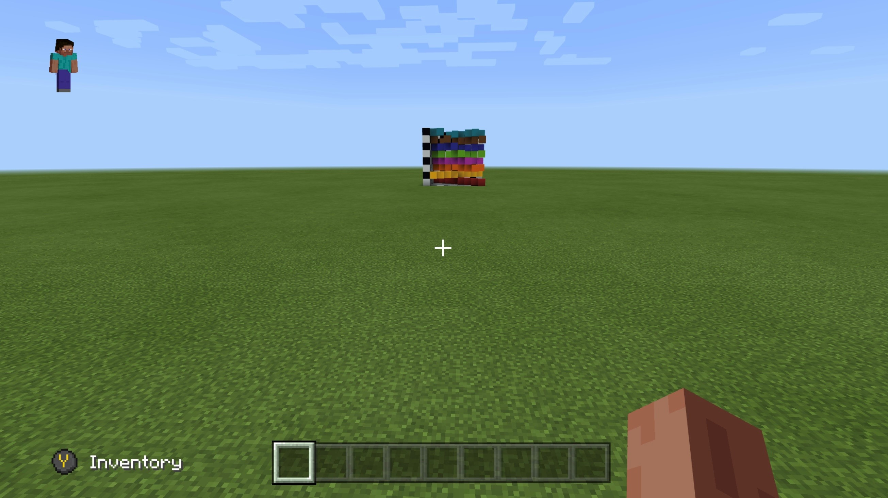
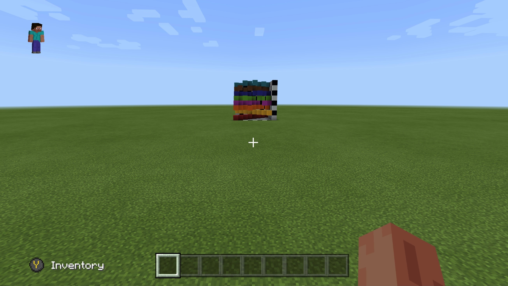
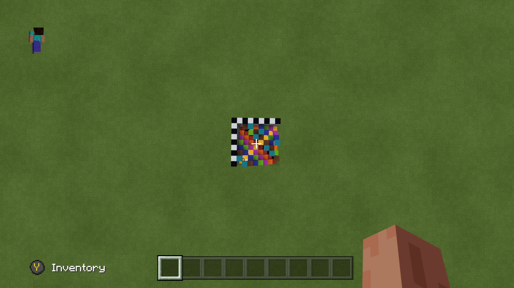
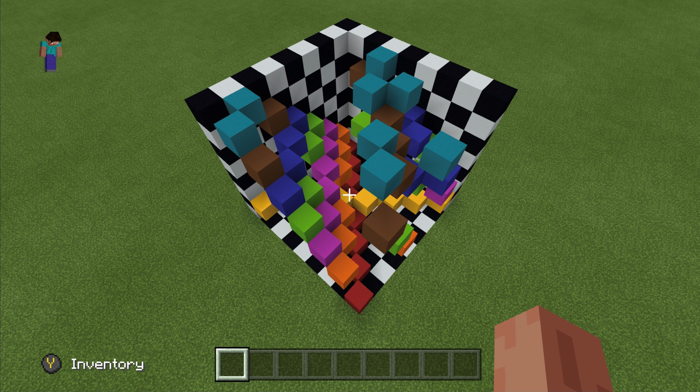
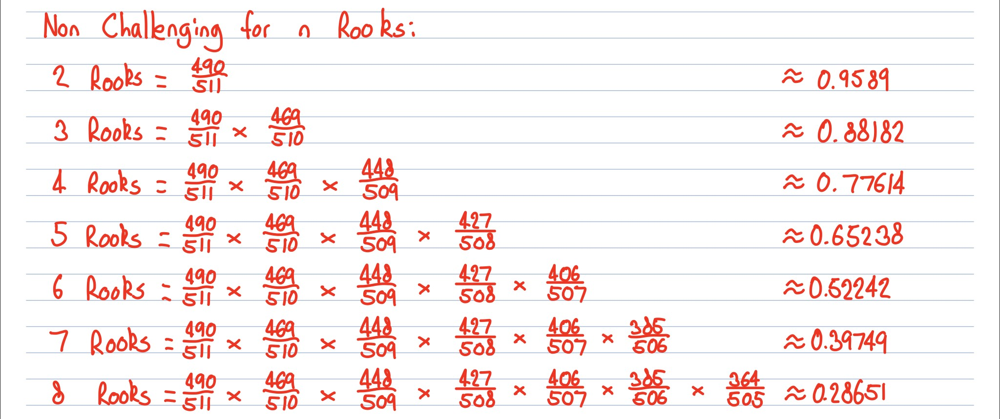
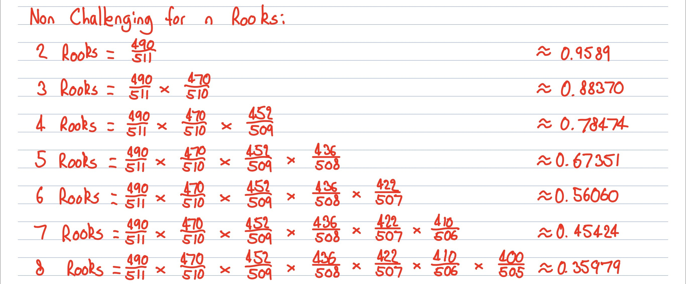

Before we started our investigation we did some background research and found that ideas of three dimensional chess have existed for a long time, first developed in 1907 by the German doctor, Ferdinand Maack. He developed the idea of playing chess on an $8 \times 8 \times 8$ board, called Raumschach, literally meaning 'space chess'. It was later changed to a $5 \times 5 \times 5$ board but for the purposes of this project, we kept to an $8 \times 8 \times 8$ board.
The configurations of rooks on a 3D board are more complicated than of those on a 2D board. Thinking of the configuration in a graphical way, if two of the three coordinates of rooks are the same, then the rooks are in a challenging position.
Say we have two rooks on a 3D chessboard. If just one of the coordinates matches, then they are in the same $x$, $y$ or $z$ plane, but not challenging. This would be similar to having a non-challenging situation on the 2D board, as the $z$ coordinate matches, but they are still non-challenging.
If two coordinates match, then the rooks are challenging, as only one coordinate will need to be changed to reach the position of another rook on the board.
If all three coordinates match, then the rooks are on the same space on the 3D board.
If no coordinates match, then this is a non-challenging position, for example, if the rooks were in opposite corners of the cube.
We found that on an $8 \times 8 \times 8$ board, it would be possible to have $64$ rooks in a non-challenging position. This can be done by splitting the $8 \times 8 \times 8$ board into $8$ lots of $8 \times 8$ boards, stacked on top of each other. If every individual board is non-challenging from itself, and none of the layered boards have individual rooks in the same position as we look from above, then it is possible to get $64$ rooks on this board.
This idea was first plotted out by drawing rook configurations using different colours, and looking at the $8 \times 8 \times 8$ board from above, with each colour representing a new level. This can be seen below:
Looking at each individual colour, there are eight non-challenging rooks on each level, where each colour represents a vertical level, red being the bottom level, and cyan being the top level.
One way of representing this 3D model was with the use of Minecraft. This allowed us to visualise an $8 \times 8 \times 8$ cube, and using different coloured blocks to recreate the diagram above in three dimensions.
  The three images above show the 3D configuration from the front, right hand side and the top. In the first two images, we can see that each row is split into their own colours, and looking from above, we can see that there are no challenging rooks vertically. This was the easiest way to demonstrate the possibilities of rooks in three dimensions, and showed one way of having $64$ non-challenging rooks on the cube. There are other ways of doing this, for example, swapping sets of colours around, or finding other configurations such that there were no more than one rook in each vertical column.
Combining all three dimensions into one image, we get the following:
We can see above that there are no challenging rooks, since the rooks only have at most one coordinate in common.
Using Python, we can get the user to input a number of rooks on the board, and the output to display the coordinates of these rooks, and if they are challenging or not. This is shown below using hilite.me.
import random random.seed() r = int(input("How many rooks: ")) frequency = [-r, -r, -r, 0] x_values = [] for i in range(0, r): n = random.randrange(1, 9) x_values.append(n) y_values = [] for i in range(0, r): n = random.randrange(1, 9) y_values.append(n) z_values = [] for i in range(0, r): n = random.randrange(1, 9) z_values.append(n) for j in range(i): while x_values[i] == x_values[j] and y_values[i] == y_values[j] and z_values[i] == z_values[j]: x_values[i] = random.randrange(1, 9) y_values[i] = random.randrange(1, 9) z_values[i] = random.randrange(1, 9) j = 0 print("Here is a list of the x values: ", x_values) print("Here is a list of the y values: ", y_values) print("Here is a list of the z values: ", z_values) for i in range(0, r): for j in range(0, r): if (x_values[i] == x_values[j]) and ((y_values[i] == y_values[j]) or (z_values[i] == z_values[j])): frequency[0] += 1 for i in range(0, r): for j in range(0, r): if (y_values[i] == y_values[j]) and ((x_values[i] == x_values[j]) or (z_values[i] == z_values[j])): frequency[1] += 1 for i in range(0, r): for j in range(0, r): if (z_values[i] == z_values[j]) and ((x_values[i] == x_values[j]) or (y_values[i] == y_values[j])): frequency[2] += 1 frequency[0] = int(frequency[0]/2) frequency[1] = int(frequency[1]/2) frequency[2] = int(frequency[2]/2) print("The frequency is: ", frequency) if frequency[0] >= 1 or frequency[1] >= 1 or frequency[2] >= 1: print("This is challenging.") else: print("This is non-challenging.") print("There is", int((frequency[0] + frequency[1] + frequency[2])/2), "set(s) of challenging rooks.")
The first two lines imports the random module, and randomises everything.
Line $4$ asks the user to input a number of $r$ rooks onto the board
Line $6$ sets the frequency variable to have three values of $-r$. This is because later on, the loops match rooks against themselves, so adding these will take the frequency back to $0$.
Lines $8$ to $11$, $12$ to $15$ and $16$ to $19$ fills empty lists for $x$, $y$ and $z$ values for up to $r$ rooks.
Lines $21$ up to $26$ replace any repeated values, where two rooks could have been allocated the same space on the 3D board.
Lines $28$ to $30$ print the lists of the $x$, $y$ and $z$ values. These are printed and align so the the $n^{th}$ rook's coordinates can be seen by looking down the lists and taking a number from each one.
Lines $32$ to $35$ state that if there are two matching $x$ coordinates, and either the $y$ or $z$ coordinates match for the same $n^{th}$ rook, we add one to the frequency of the $x$ values. The same thing happens for the frequency of $y$ coordinates from lines $37$ to $40$, and $z$ coordinates for lines $42$ to $45$.
Lines $47$ to $49$ convert the frequencies from floats back to integers, which makes the output look nicer to read. Wenhave to divide by two as coordinates can match when the $i$ and $j$ values are switched in the double for loop.
Line $51$ prints the frequency of repeated values in each dimension, for $x$, $y$ and $z$.
Lines $53$ to $56$ uses an if and else statement to display if there is a challenging configuration or not, using the frequency variable.
Line $58$ displays the number of sets of challenging rooks, since one rook challenging has two matching coordinates, we msut divide by two to give the number of sets of challenging positions on the board.
Some outputs look as if they could cause problems. As we know from the introduction, we can have up to $64$ rooks on the board, but the output of sets of challenging rooks is above $64$. This is because it is likely we have multiple rooks in a line. For example, if we have $4$ rooks in a line, each labelled; $a$, $b$, $c$ and $d$, the permutations of these are challenging. For example, we have $a$ and $b$, $a$ and $c$, $a$ and $d$, $b$ and $c$, $b$ and $d$, and $c$ and $d$, all challenging.
Thinking of a configuration of $n$ rooks in this way first was useful as the main problem was to get two coordinates matching. Then the code could be developed for a large number of trials, as seen below.
Here, we can get the user to input a number of rooks. The experiment is repeated a large number of times, and there is an output of the non-challenging percentage. This can be seen below using hilite.me.
import random random.seed() r = int(input("How many rooks: ")) NO_OF_TRIALS = 100000 cornc = [0, 0, 0] for i in range(NO_OF_TRIALS): frequency = [-r, -r, -r, 0] x_values = [] for i in range(0, r): n = random.randrange(1, 9) x_values.append(n) y_values = [] for i in range(0, r): n = random.randrange(1, 9) y_values.append(n) z_values = [] for i in range(0, r): n = random.randrange(1, 9) z_values.append(n) for j in range(i): while x_values[i] == x_values[j] and y_values[i] == y_values[j] and z_values[i] == z_values[j]: x_values[i] = random.randrange(1, 9) y_values[i] = random.randrange(1, 9) z_values[i] = random.randrange(1, 9) j = 0 for i in range(0, r): for j in range(0, r): if (x_values[i] == x_values[j]) and ((y_values[i] == y_values[j]) or (z_values[i] == z_values[j])): frequency[0] += 1 for i in range(0, r): for j in range(0, r): if (y_values[i] == y_values[j]) and ((x_values[i] == x_values[j]) or (z_values[i] == z_values[j])): frequency[1] += 1 for i in range(0, r): for j in range(0, r): if (z_values[i] == z_values[j]) and ((x_values[i] == x_values[j]) or (y_values[i] == y_values[j])): frequency[2] += 1 frequency[0] = int(frequency[0]/2) frequency[1] = int(frequency[1]/2) frequency[2] = int(frequency[2]/2) if frequency[0] >= 1 or frequency[1] >= 1 or frequency[2] >= 1: cornc[0] += 1 else: cornc[1] += 1 NCP = (cornc[1]*100)/NO_OF_TRIALS print("In 3D, the", r, "rooks are non-challenging", NCP, "% of the time.")
Large parts of the code are similar to before, this was to get an idea of how it worked, and then developing it for a large number of trials.
The first two lines are the same as before, importing the random module.
Line $4$ gets the user to input a number of $r$ rooks.
Line $6$ sets a variable to repeat the experiment $100,000$ times.
Line $8$ creates a new variable 'cornc', standing for 'challenging or non-challenging'. The first $0$ is challenging, and the second $0$ is non-challenging.
The for loop on line $10$ repeats the configuration for one trial like before, $100,000$ times.
Line $11$ sets the frequency as it did before, but it resets for every trial we do.
Lines $12$ to $23$ create $r$ lots of $x$,$y$ and $z$ coordinates.
Lines $24$ to $29$ make sure there are no repeated coordinates, and replaces them with new ones, so results are more accurate too.
Lines $30$ to $41$ adds to the frequency variable for when we have a challenging configuration in each individual trial.
Lines $42$ to $44$ are the same as before.
The if and else statement from lines $45$ to $48$ are similar to the output from before, but now if there is a challenging configuration, we add one to the first $0$ of the 'cornc' variable, and for non-challenging we add one to the second $0$.
Line $50$ calculates the non-challenging percentage (NCP), depending on the non-challenging configurations and the number of trials.
Line $52$ displays the non-challenging percentage depending on the number of rooks the user inputted.
It was calculated that for two rooks in 3D, there would be a non-challenging percentage of $95.89\%$. This is because the first rook takes one of the $512$ spaces on the board, and occupies $7$ spaces in each of the three dimensions. So the probability of two rooks being non-challenging is $\frac{490}{511}$, and is equivalent to around $95.89\%$.
However, as we add more rooks to the board, the probability is dependent on the previous rooks' positions. If the first two rooks share one coordinate, they both occupy $40$ spaces, but if they don't share a coordinate then they are able to occupy $42$ spaces. The more rooks we add, the more complicated this becomes, as we depend on the positions of previous rooks. It is only possible to have $8$ rooks on the board such that each has no matching coordinates.
Using this, we found the following results:
| n | Non-Challenging Percentage | Calculated NCP with Distinct Coordinates | Calculated NCP with One Matching Coordinate |
|---|---|---|---|
| 2 | 95.924% | 95.89% | 95.89% |
| 3 | 87.98% | 88.182% | 88.37% |
| 4 | 77.05% | 77.614% | 78.474% |
| 5 | 64.765% | 65.238% | 67.351% |
| 6 | 51.661% | 52.242% | 56.060% |
| 7 | 39.247% | 39.749% | 45.424% |
| 8 | 28.354% | 28.651% | 35.979% |
| 16 | 0.343% | --- | --- |
| 32 | 0% | --- | --- |
| 64 | 0% | --- | --- |
This table of results shows that the non-challenging percentages of the rooks follow similarly. It would be difficult to know whether the rooks share a coordinate or not as their positions are random.
The calculations below demonstrate how the results in the table above were found. We take one from the denominator each time as there is one less space on the board for the rook to be placed. We take $21$ from the numerator each time as each rook will challenge $7$ spaces in each of the three dimensions. One way of getting this particular configuration would be to have all the rooks go diagonally from one corner to the opposite corner. For example, rook $1$ would have coordinates $(1, 1, 1)$, rook $2$ would have coordinates $(2, 2, 2)$, and so on.
These next set of calculations show the differences for when there are $8$ rooks on the board that all have one coordinate in common, for example, lining the all up diagonally along the bottom of the cube.
Both of the above caluclations are likely to be upper and lower bounds for the expected non-challenging percentage, as the placement of rooks in terms of coordinates is random, and it can be clearly seen that the code-run experiment provides values closer to that of unique coordinates.
In theory, it is more likely to have $8$ distinctly positioned coordinates, as each coordinate is picked randomly from $1$ to $8$, with equal probability. Meaning it would make sense if we had $8$ distinctly positioned coordinates rather than $8$ matching coordinates for a particular axis. The probability of of choosing $8$ of the same value for an axis would be $(\frac{1}{8})^8$, which is a $1$ in $16,777,216$ chance. This explains why the computed values are closer to the values of distinct coordinates, rather than the matching coordinates in the table above.
The two programs used on this webpage above were displayed using hilite.me. The code can be ran itself using this notebook.